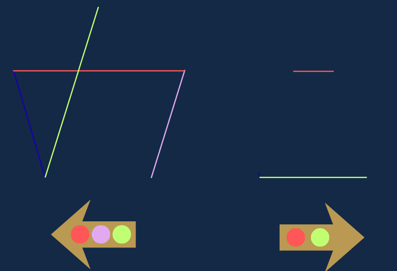

11/24 パネルの謎 ヒントページ
ヒント
左の矢印は左の星マークを、右の矢印は右の星マークを指している。
星の直線の色と、矢印の中に描かれている色をよく見比べてみよう。
星の直線の色と、矢印の中に描かれている色をよく見比べてみよう。

答え・解説
星はカラフルな色の線で構成されている。
矢印の中にある色の線だけを抜き出すと現れる文字は「カニ」。
答えは「カニ座」。
矢印の中にある色の線だけを抜き出すと現れる文字は「カニ」。
答えは「カニ座」。